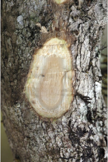
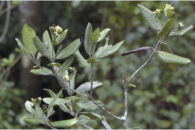
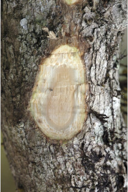
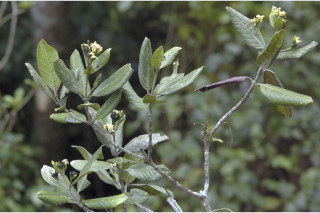
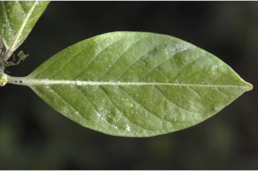
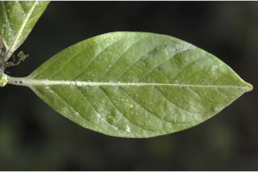

Large shrubs to small trees up to 6 m tall.
ದೊಡ್ಡ ಗಾತ್ರದ ಪೊದೆಗಳು ಅಥವಾ ಅಂದಾಜು 6 ಮೀ. ಎತ್ತರದವರೆಗಿನ ಸಣ್ಣ ಗಾತ್ರದ ಮರಗಳು.
Large shrubs to small trees up to 6 m tall.
பெரிய குத்துச்செடி முதல் சிறிய மரம் 6 மீ. உயரம் வரை வளரக்கூடியது.
Bark greyiesh brown, scaly; blaze with orange speckles.
ತೊಗಟೆ ಬೂದು ಮಿಶ್ರಿತ ಕಂದು ಬಣ್ಣ ಹೊಂದಿದ್ದು ಚಕ್ಕೆ ರೂಪದಲ್ಲಿರುತ್ತವೆ;ಕಚ್ಚು ಮಾಡಿದ ಜಾಗ ಕಿತ್ತಳೆ ಬಣ್ಣದ ಮಚ್ಚೆಗಳಿಂ ಕೂಡಿರುತ್ತದೆ.
Bark greyiesh brown, scaly; blaze with orange speckles.
மரத்தின் பட்டை சாம்பல்-ப்ரவுன் நிறமானது, செதில்களாக உதிருபவை; உள்பட்டை ஆரஞ்ச் நிற புள்ளிகளுடையது.
Young branchlets angular, terete when mature, glabrous; apical bud usually exudes yellow resin.
ಎಳೆಯ ಕಿರುಕೊಂಬೆಗಳು ಕೋನಯುಕ್ತವಾಗಿರುತ್ತವೆ ಹಾಗೂ ಬಲಿತಾಗ ದುಂಡಾಗಿರುರುತ್ತವೆ ಹಾಗೂ ರೋಮರಹಿತವಾಗಿರುತ್ತವೆ;ಅಂಕುರ ಮೊಗ್ಗು ಸಾಮಾನ್ಯವಾಗಿ ಹಳದಿ ಬಣ್ಣದ ಅಂಟು ದ್ರವನ್ನು ಒಸರುತ್ತದೆ.
Young branchlets angular, terete when mature, glabrous; apical bud usually exudes yellow resin.
சிறிய நுனிக்கிளைகள் குறுக்குவெட்டுத் தோற்றத்தில் கோணங்களுடையது, முதிரும் போது வளையமானது, உரோமங்களற்றது; நுனியிலுள்ள மொட்டு மஞ்சள் நிற ரெசீன் சுரக்ககூடியது.
Leaves simple, opposite, decussate; stipules triangular with apiculate tip, interpetiolar, caducous and leaving scar; petiole 0.5-2 cm, canaliculate, glabrous; lamina 8-18 x 4-8 cm, elliptic to elliptic-ovate, apex shortly and abruptly acuminate with blunt tip, base attenuate, margin entire and revolute, glabrous beneath; midrib usually raised above and canaliculate when dry; secondary_nerves 9-12 pairs, hairy domatia present at axils of secondary_nerves; tertiary_nerves broadly reticulate.
ಎಲೆಗಳು ಸರಳವಾಗಿದ್ದು ಕತ್ತರಿಯಾಕಾರದ ಅಭಿಮುಖ ಜೋಡನಾ ವ್ಯವಸ್ಥೆಯಲ್ಲಿರುತ್ತವೆ, ಕಾವಿನೆಲೆಗಳು ಅಗ್ರದಲ್ಲಿ ಚೂಪಾದ ಸೂಕ್ಷ್ಮವಾದ ಮುಳ್ಳು ಹೊಂದಿದ್ದು ತ್ರಿಕೋನಾಕಾರದಲ್ಲಿದ್ದು ತೊಟ್ಟುಗಳ ನಡುವೆ ಇರುತ್ತವೆ, ಹಾಗೂ ಉದುರಿದ ನಂತರ ಗುರುತುಗಳನ್ನು ಉಳಿಸುತ್ತವೆ;ತೊಟ್ಟು 0.5 – 2 ಸೆಂ.ಮೀ.ವರೆಗಿನ ಉದ್ದವಿದ್ದು, ಕಾಲುವೆ ಗೆರೆ ಸಮೇತವಿದ್ದು, ರೋಮರಹಿತವಾಗಿರುತ್ತವೆ;ಪತ್ರಗಳು 8 -18 X 4 - 8 ಸೆಂ.ಮೀ. ಗಾತ್ರ ಹೊಂದಿದ್ದು,ಅಂಡವೃತ್ತದಿಂದ ಅಂಡವೃತ್ತ-ಅಂಡದವರೆಗಿನ ಆಕಾರ ಹೊಂದಿದ್ದು, ಮೊಂಡಾಗ್ರವುಳ್ಳ ,ಥಟ್ಟನೆ ಕ್ರಮೇಣ ಚೂಪಾಗುವ ತುದಿ, ಒಳಬಾಗಿದ ಬುಡ, ನಯವಾದ ಮತ್ತು ಹಿಂಸುರುಳಿಗೊಂಡ ಅಂಚು ಹೊಂದಿದ್ದು ತಳಭಾಗದಲ್ಲಿ ರೋಮರಹಿತವಾಗಿರುತ್ತವೆ;ಮಧ್ಯನಾಳ ಪತ್ರದ ಮೇಲ್ಭಾಗದಲ್ಲಿ ಉಬ್ಬಿರುತ್ತವೆ ಮತ್ತು ಒಣಗಿದಾಗ ಕಾಲುವೆರೆ ಸಮೇತವಿರುತ್ತವೆ;ಎರಡನೇ ದರ್ಜೆಯ ನಾಳಗಳು 9 ರಿಂದ 12 ಜೋಡಿಗಳಿದ್ದು ಅಕ್ಷಾಕಂಕುಳಿನಲ್ಲಿ ರೋಮಸಹಿತವಾದ ಸೂಕ್ಷ್ಮ ಸಹಜೀವಿ ಗೂಡುಗಳ ಸಮೇತವಿರುತ್ತವೆ;ಮೂರನೇ ದರ್ಜೆಯ ನಾಳಗಳು ವಿಶಾಲ ಜಾಲಬಂಧ ನಾಳ ವಿನ್ಯಾಸದಲ್ಲಿರುತ್ತವೆ.
Leaves simple, opposite, decussate; stipules triangular with apiculate tip, interpetiolar, caducous and leaving scar; petiole 0.5-2 cm, canaliculate, glabrous; lamina 8-18 x 4-8 cm, elliptic to elliptic-ovate, apex shortly and abruptly acuminate with blunt tip, base attenuate, margin entire and revolute, glabrous beneath; midrib usually raised above and canaliculate when dry; secondary_nerves 9-12 pairs, hairy domatia present at axils of secondary_nerves; tertiary_nerves broadly reticulate.
இலைகள் தனித்தவை, எதிரடுக்கமானவை, குறுக்குமறுக்கானவை; இலையடிச்செதில் முக்கோணமானது மற்றும் நீட்சியுடையது, இலையடிச்செதில் இருஇலைக்காம்பிற்கு நடுவே (இண்டர்பீட்டியோலார்) உடையது, எளிதில் உதிரக்கூடியது மற்றும் தழும்புகளை ஏற்படுத்துகின்றன; இலைக்காம்பு 0.5-2 செ.மீ., குறுக்குவெட்டுத் தோற்றத்தில் கேனாலிகுலேட், உரோமங்களற்றது; இலை அலகு 8-18 X 4-8 செ.மீ., நீள்வட்ட வடிவானது முதல் நீள்வட்டம்-முட்டை வடிவானது, அலகின் நுனி குட்டையான சிறிது அதிக்கூரியதுடன் அதன் முனை மழுங்கியது, அலகின் தளம் அட்டனுவேட், அலகின் விளிம்பு முழுமையானது மற்றும் பின்புறம் வளைந்து (ரெவலுட்) காணப்படும், உரோமங்களற்றது; மையநரம்பு மேற்புறத்தில் அலகின் பரப்பைவிட சிறிது உயர்ந்து இருக்கும் மற்றும் உலரும் போது அலகின் பரப்பைவிட சிறிது பள்ளமானது; இரண்டாம் நிலை நரம்புகள் 9-12 ஜோடிகள், உரோமங்களுடைய டொமேசியா நரம்புகளின் கோணங்களில் உடையது; மூன்றாம் நிலை நரம்புகள் அகன்ற வலைப்பின்னல் போன்றவை.
Inflorescence terminal corymbose cymes; flowers cream to yellow, subsessile.
ಪುಷ್ಪಮಂಜರಿಗಳು ತುದಿಯಲ್ಲಿ ನೀಳಛತ್ರ ಮಧ್ಯಾರಂಭಿ ಮಾದರಿಯವು;ಹೂಗಳು ಕೆನೆಯಿಂದ ಹಳದಿಯವರೆಗಿನ ಬಣ್ಣ ಹೊಂದಿರುತ್ತವೆ,ಉಪತೊಟ್ಟುಸಹಿತವಾಗಿರುತ್ತವೆ.
Inflorescence terminal corymbose cymes; flowers cream to yellow, subsessile.
மஞ்சரி தண்டின் நுனியில் காணப்படும் கோரியம்போஸ் சைம் வகை மஞ்சரி; மலர்கள் கீரிம் நிறமானது முதல் மஞ்சள் நிறமானது, காம்பற்றது அல்லது மிகச்சிறிய காம்புடையது.
Berry, 2-celled; seeds many.
ಡ್ರೂಪ್ಗಳು 2 ಕೋಶಗಳನ್ನೊಳಗೊಂಡಿರುತ್ತವೆ;ಬೀಜಗಳ ಸಂಖ್ಯೆ ಹಲವಾರು.
Berry, 2-celled; seeds many.
முழுச்சதைகனி (பெர்ரி), 2-அறைகளுடையது; விதைகள் எண்ணற்றது.
 





 
